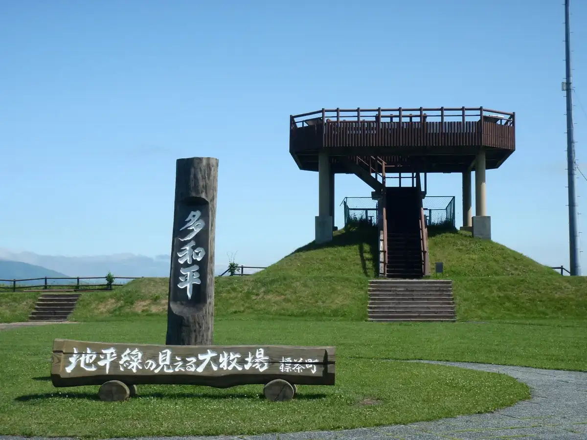
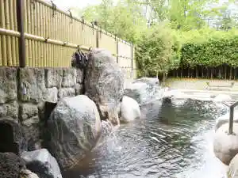
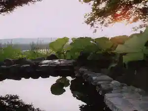
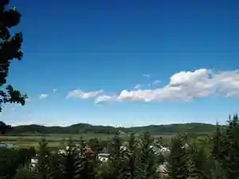
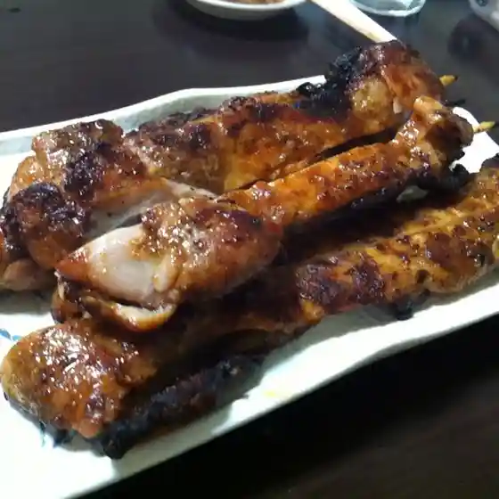
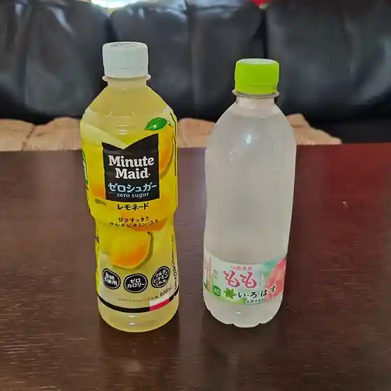
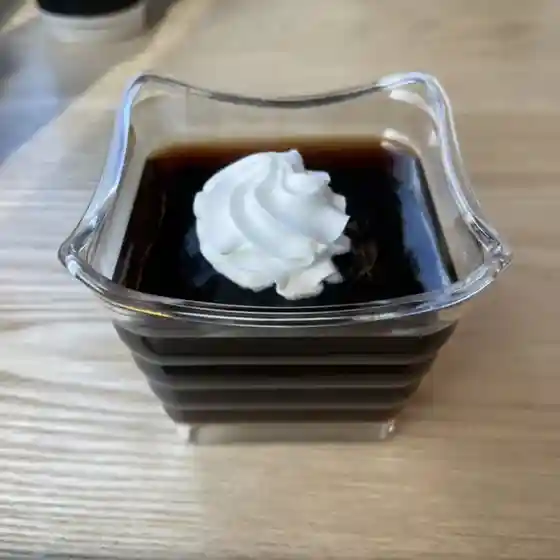
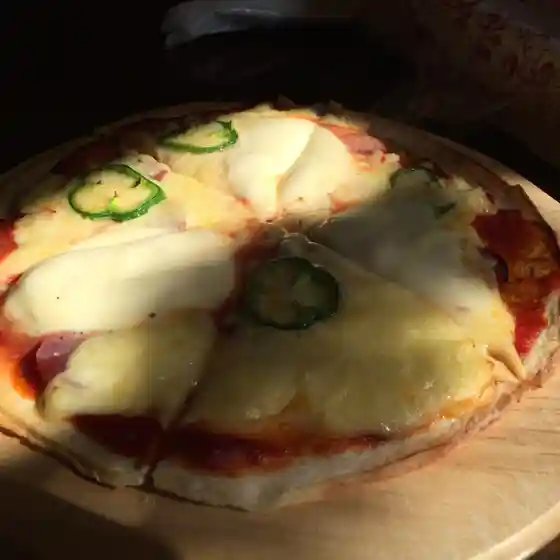
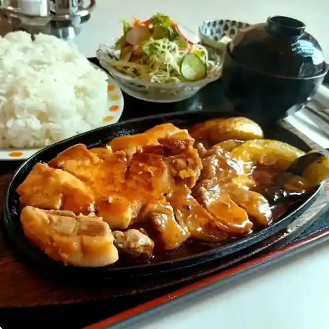
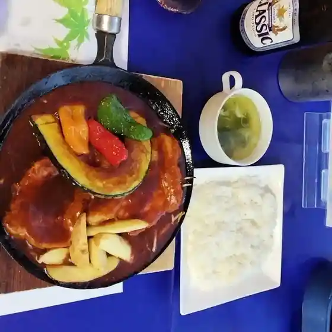

Shibecha
Shibecha · Hokkaido
Shibecha
Highlighted on the Hokkaido map.

Stay
ホテル・テレーノ 気仙

Hoteru Tereeno Kesen
ロッジ シラルトロ

Rojji Shirarutoro
釧路湿原かや沼観光宿泊施設 ぽん・ぽんゆ
Kushiroshitsugen Kaya Numa Kankou Shukuhakushisetsu Pon Ponyu
釧路湿原とうろの宿

Kushiroshitsugen Tourono Yado
Dining
居仲門

Kyo Naka Mon
味幸園

Aji Sachi Sono
cafe & gallery 汀の風

Cafe & Gallery Migiwa No Kaze
長尾菓子舗

Nagao Kashi Ho
スローフード・カフェ メリーさんのひつじ

Suroofuudo Kafe Merii Sannohitsuji
心光灯亭 えん

Kokoro Hikari Tomoshibi Tei En
レストランカントリー

Resutorankantorii
ホテルテレーノ気仙

Hoterutereeno Kesen
三楽荘
Sanraku Sou
Mico.
Mico .
ロッジ シラルトロ
Rojji Shirarutoro
民宿木理
Minshuku Kime
ノロッコ＆8001
Norokko & 8001
ペンション未知標
Penshon Michi Shirube
そば処福住駒龍
Soba Tokoro Fukuzumi Koma Ryuu
レストラン きらり
Resutoran Kirari
ぱる
Paru
食事処 くるくるくるりん
Shokuji Tokoro Kurukurukururin
しべちゃ もみじ屋
Shibecha Momiji Ya
Bob's Burger
Bob'S Burger
フクハラ 標茶店
Fukuhara Shibecha Mise
ログ・キャビン
Rogu Kyabin
山小屋
Yamagoya
オーロラファームヴィレッジ
Oororafaamuvirejji